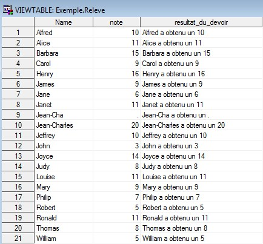

Statistics and economic studies in SAS
Introduction
The interface
The editor
The Editor window is the window in which the command lines are inserted
The log
The log is the summary of the execution of instructions :
Error messages, warnings and notes
The output
The Output (or OUTPUT) window contains the results from PROC steps

Explorer / results
In the left-hand window, two tabs are present
Explorer
In particular, the Explorer tab provides access to libraries and their contents
Results
The Results tab provides access to all the results generated by SAS during the working session

The interface
Programming principles
SAS program interaction with data-forward
SAS program interaction with data-while
SAS program interaction with data-after
Decomposition of SAS programs
A program is a series of SAS steps
Mainly of two types of named steps
-
DATA
-
PROC
Decomposition of SAS programs
Each step is a series of instructions
which can be accompanied by keywords
and that end with a ;
Decomposition of SAS programs
The steps end with the keyword RUN;
or in the case of certain PROC steps the keyword QUIT;
QUIT; is intended to free the connection with the manipulated objects
Writing a SAS program
Writing a program requires a few basic rules to make it easier to read and debug it
Writing a SAS program
You must always comment on the program
To insert comments, there are two synthaxes
/* Insert comments */
* comment;
Writing a SAS program
Do not hesitate to run the program frequently, taking the necessary precautions, so as not to accumulate bugs
Running a SAS program
A program is executed by pressing F3 or using the button
Running a SAS program
At each execution, the system completes the Log window by generating a series of notes, warnings or errors that we learn to decrypt
Analysis of outputs
When tables are generated by the program, we should always check that they correspond to our expectations
Analysis of outputs
The Output tab is fed in the case of certain steps
This tab can quickly turn out to be too large to be interpreted correctly
Don't hesitate to clean this tab using the command Ctrl + E
My 1st SAS program: Hello World
Your Turn !
4 data _null_;
5 put "Hell" "o World!";
6 run;
Hello World!
NOTE: DATA statement used (Total process time):
real time 0.01 seconds
cpu time 0.01 seconds
Library management
Link between the program and the database storages
Introduction to libraries
The SAS software has a library system for database management
A library consists of a virtual name assigned to a physical directory

This is where you will store the tables (called data) that contain variables in columns and observations in rows
Assign a library
In order to assign a library, all you have to do is enter the code below in the Editor window, respecting the following syntax:
Example

Your Turn !
Libname
exemple
'C:\votre_repertoire\data1';
7 Libname exemple 'C:\votre_repertoire\data1';
NOTE: Libref EXEMPLE was successfully assigned as follows:
Engine: V9
Physical Name: C:\votre_repertoire\data1
Unassign a library
Symmetrically, you can unassign a library using the SAS instruction clear .
Example

Notes
Library assignments are always made at the start of the program
By default, the only library defined is a temporary library called WORK
The WORK is automatically reinitialized when the SAS programs are closed, and all its content is therefore deleted
Library feed:
Data import
Data Import
To import tables into a library,
two solutions are possible:
-
SAS Assistant
-
PROC IMPORT
SAS Assistant
In the tab File \ Import data ...
 in case of problem, possible resolution by launching the AccessDatabaseEngine.exe executable in:
in case of problem, possible resolution by launching the AccessDatabaseEngine.exe executable in: SAS Software Depot \ products \ sysreqwizard__92210__prt__xx__sp0__1 \ redist \ ace \ en or in:
SAS Software Depot \ products \ ace__99140__prt__xx__sp0__1 \ w32 \ native
or check the versions of SAS vs Excel
SAS Assistant
Select the Excel sheet previously prepared for import
Then select the library in which the table will be stored under SAS
SAS Assistant
You must then give a name to the imported table
The name assigned must be adapted to the software, so spaces and special characters must be avoided.
Another method of importing data
There is also a SAS procedure which allows you to import tables directly without using the wizard
To do this, you have to master the import proc and respect the following syntax
Another method of importing data
In the previous example, the code that should have been inserted in the Editor window would have been the following:
Another method of importing data
Likewise, the table would have been permanently stored in the selected library.
The newspaper would then have returned the following note
Note: EXEMPLE.MATABLE was successfully created.
Formats and operators
Notes on formats
Variable formats are crucial and turn out to be the source of many compilation errors
It is important to be careful with the formats of variables when creating or importing them
Principles of format definition
SAS formats are defined as follows
< $>format< w>.< d>
| Code | Meaning | $ | Indicates a string type format | format | Keyword which indicates to SAS the desired format attributed | w | Indicates the total length of the variable including spaces and special characters | . | Delimiter between w and d | d | Indicates the number of decimal places required in a numeric variable |
|---|
Main formats in SAS
Character or alphanumeric variables are identified by the symbol $
They have a maximum length defined during an import as the maximum length of the modality associated with the imported variable
| Code | Meaning | $2. | Ab | $UPCASE2. | AB |
|---|
Main formats in SAS
Numeric variables are identified by the number of digits they can contain and a number of decimal places if necessary
| Code | Meaning | 5. | 12345 | 7.2 | 1234.56 | NUMX7.2 | 1234,56 |
|---|
Main formats in SAS
Date variables are the most complex because they are subject to different national conventions
These are special cases of numeric variables
| Code | Meaning | DDMMYY10. | 25/07/2014 | MMYYS7. | 07/2014 | YEAR4. | 2014 | FRADFWDX. | 25 Juillet 2014 | FRADFWKX. | Vendredi 25 Juillet 2014 |
|---|
Introduction to truncation risk
A poorly defined format can cause errors when compiling a program
However it can happen that the program manages to compile but the errors of definition of formats can corrupt the data in a dramatic way.
Introduction to truncation risk
For example, take the case of a class of 19 students such as:

Introduction to truncation risk
During the year, a new student joins the class
Its description is contained in the nouvelle_eleve table such as:
Introduction to truncation risk
I integrate the new student into the class
The Name variable was initially defined by default as an 8 character string.
Jean-Charles is a 12 character string it has been truncated at the 8th character.
Introduction to truncation risk
I then want to implement the exam grades stored in the grade table
The Name variable this time was defined as a string of 12 characters maximum
Introduction to truncation risk
According to the reference table that I will select, the program will run but 2 types of results are expected
Introduction to truncation risk
If the Class table is taken as a reference, with name defined $ 7. I get :
Introduction to truncation risk
If the Note table is taken as a reference, with name defined $ 12. I get :
Introduction to truncation risk
In the first case, the 'Jean-Charles' modality is not possible. SAS then recognizes 'Jean-Cha' in the two tables and manages to make the link between the two individuals.
In the second case, the 'Jean-Charles' modality is a possible modality. SAS then identifies 2 individuals, Jean-Cha present in the Class table, and Jean-Charles present in the Note table.
Introduction to truncation risk
Although the program did not generate an error, the incorrect attribution of formats duplicated individuals and generated missing values in the worst case. In the best of the two cases, it's just a matter of display.
Summary of operators
Comparison operators
| Code | Meaning | LT | < | Less than | EQ | = | Equal | GT | > | Greater than | LE | <= | Less or equal | NE | ^= | Non equal | GE | >= | Greater or equal |
|---|---|---|
Summary of operators
Logical Operators
| Code | Meaning | AND | & | and | OR | ! | or | NOT | ^ | not |
|---|---|---|
Summary of operators
Arithmetic operators
| Code | Meaning | + | Addition | - | Subtraction | * | Multiplication | / | Division | x <> y | Min(x,y) | Minimum between x and y | x >< y | Max(x,y) | Maximum between x and y |
|---|---|---|
Summary of operators
Concatenation of strings
| Code | Exemple | Meaning | !! ou || | Var = x||y||z | Simple concatenation |
|---|---|---|
| CATS | Var = CATS(x,y,z) | Concatenation by removing the blanks at the start and end of character chain | CATX | Var = CATX('-',x,y,z) | Concatenation by adding a separator between the variables |
| CAT | Var = CAT(x,y,z) | Concatenation while keeping blanks at the start and end of character string |
| CATT | Var = CATT(x,y,z) | Concatenation by removing blanks only in end of strings |
Functions
Functions on strings
Below are presented functions which take strings as arguments (here noted x)
| Code | Meaning | Length(x) | Returns the length of x | Compress(x,'c') | Remove the characters c from the string x | Repeat(x,n) | Repeat the string x x n times in one string of characters | Index (x, m) | Returns the place of the word m in the character string x | Upcase (x) | Make x uppercase | Lowcase (x) | Make x lowercase | Substr (x, n, l) | Extracts from x a word of length l starting from the nth character | Scan (x, n, 'sep') | Extract from x the nth word by considering a certain separator 'sep' | Tranwd (x, y, z) | Replace occurrences of word y by word z |
|---|
Date functions
Below are presented functions related to dates (here noted d)
| Code | Meaning | mdy (m, j, a) | Create a date of day d, month m and year n | Date () | Returns the current date | Datepart (d) | Extract part of date from | Day (d) | Returns the day of the date of | Month (d) | Returns the month of the date of | Year (d) | Returns the year of date d | Weekday (d) | Returns the day of the week of the date of |
|---|
Math functions
Below are presented the main mathematical functions taking by arguing a numerical variable (here noted x)
| Code | Meaning | Floor (x) | Returns the integer part of x | abs (x) | Absolute value of x | Sign (x) | Returns 1 if x is positive, -1 if x is negative and 0 otherwise | Round (x, n) | Returns the rounding of x with n decimal places | Mod (x, y) | Returns the remainder of the Euclidean division of x by y | sqrt (x) | Returns the square root of x | exp (x) | Returns the exponential of x | Log (x) | Returns the logarithm of x |
|---|
Trigonometric functions
Below are presented the main trigonometric functions taking by arguing a numerical variable (here noted x)
| Code | Meaning | Cos(x) | Returns the cosine of x | Sin(x) | Returns the sine of x | Tan(x) | Returns tangent of x | Arcos(x) | Returns the arcosine of x | Arsin(x) | Returns the arsine of x | Artan(x) | Returns the arctangent of x |
|---|
Fonctions statistiques
Below are presented the main statistical functions taking by arguing a numerical series, here noted: \[(x_1,\dots x_n)\]
| Code | Meaning | n(x1... xn) | Returns the number of non-missing values in the series \[(x_1,\dots x_n)\] | nmiss(x1... xn) | Returns the number of missing values in the series \[(x_1,\dots x_n)\] | mean(x1... xn) | Returns the mean of the series \[(x_1,\dots x_n)\] | Var(x1... xn) | Returns the empirical variance of the series \[(x_1,\dots x_n)\] |
|---|
Random functions
Below are presented the functions which allow to generate random numbers of predefined parameters a (usually equal to 0)
| Code | Meaning | Rannor (a) | Reduced centered Normal law | Ranuni (a) | Uniform law on the interval \[[0; 1]\] | Ranpoi (a, l) | Fish law of parameter l | Ranbin (a, n, p) | Binomial distribution of parameters n and p | Rantbl (a, p1, ..., pn) | Discrete distribution law \[p_1,\dots p_n\] |
|---|
Special functions
Below are two functions that are particularly useful in SAS.
| Code | Meaning | Lag (x) | Returns the previous value of the variable x | Lagn (x) | Returns the previous value n times of the variable x | Dif (x) | Returns the first order difference of the variable x | Difn (x) | Returns the difference between x and Lagn (x) |
|---|
A few illustrations before
going to the application
5-concatenation.sas
6-format_num.sas
7-formatdate1.sas